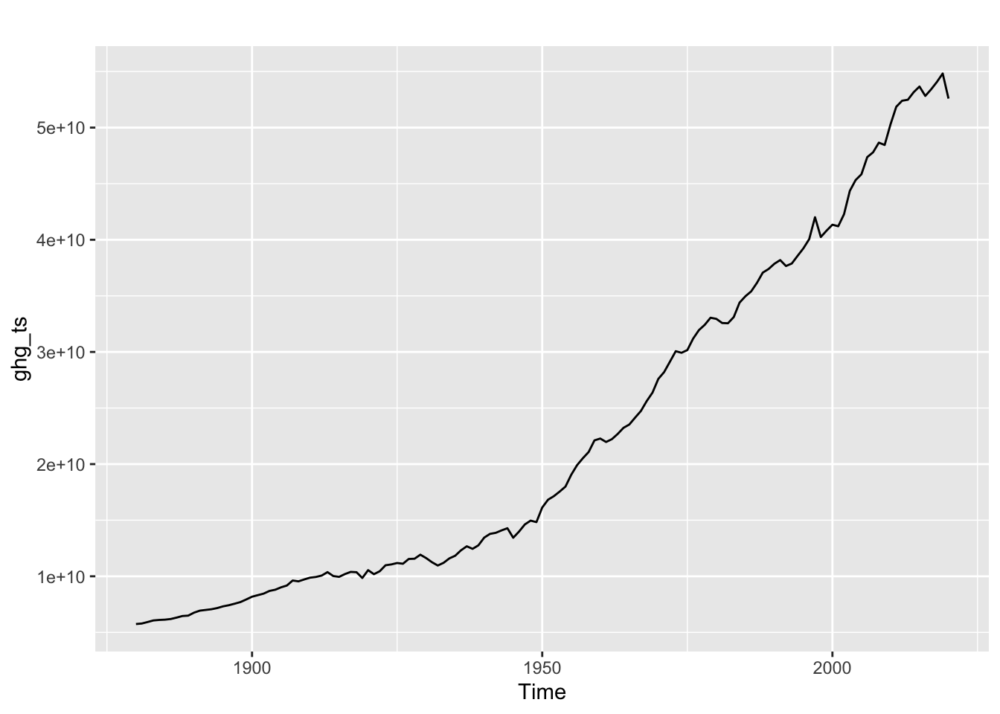
Time Series Data Analysis Project
Introduction
In this project, my group and I aim to investigate the relationship between climate change and three variables (greenhouse gas emissions, mean sea level and anomalies in land-surface air and sea-surface water temperatures) by examining its patterns and trends.
The dataset used encompasses global, yearly records from 1880 to 2020. We have also conducted forecasts for these variables over the next 80 years, providing insights into the climate change issue in the foreseeable future.
Converting to time series
We convert our dataset, as well as all three individual variables into time series. We then used autoplot to visualise how each of these individual variables evolve over time.
Greenhouse gas emissions
There is an accelerating upward trend in greenhouse gas emissions, probably due to increasing human activities.
Temperature Anomalies
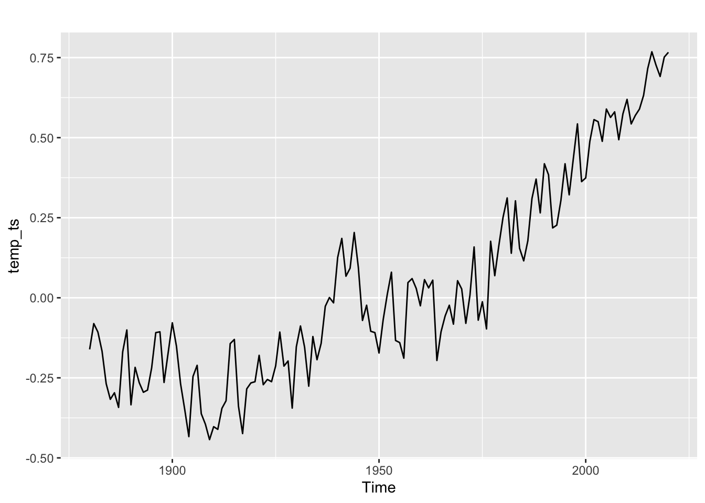
There is also an increasing upward trend in temperature anomalies. This can be attributed to the increase in greenhouse gas emissions above, further increasing the surface temperature of the Earth.
Mean Sea Level
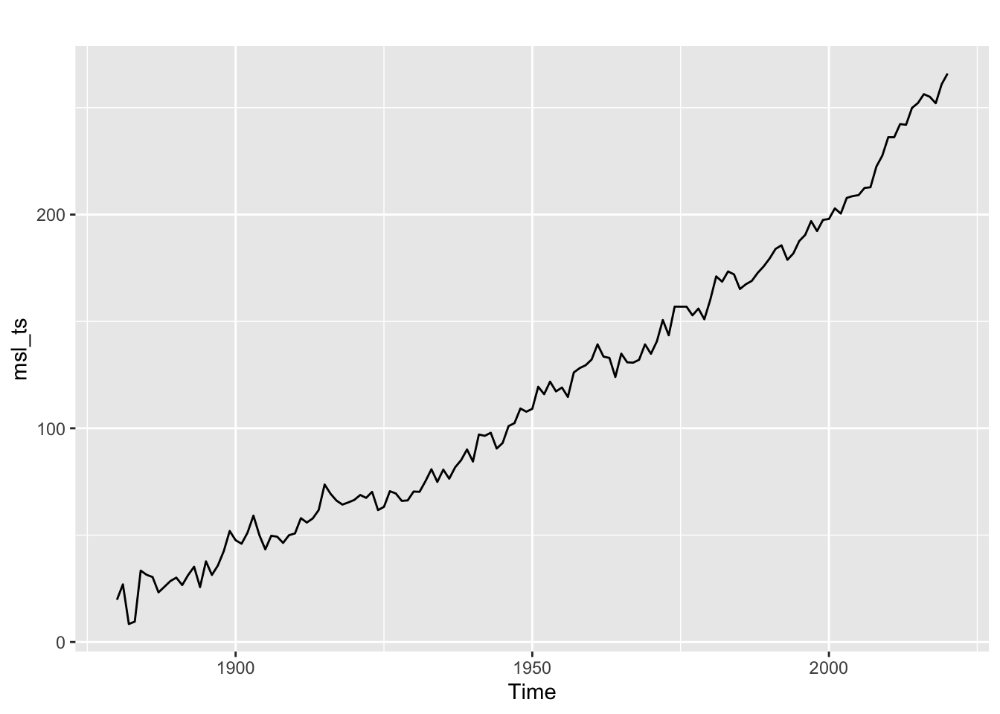
There is also an upward trend in mean sea level for the past 140 years. This is probably due to thermal expansion and melting of land-based ice, causing the increase in Earth’s temperature.
Testing for stationarity
We used the KPSS test to evaluate if the mean and variance of a time series are constant over time. The null hypothesis suggests that the data is stationary. Hence, if our test statistic is more than 0.05, this indicates that our null hypothesis is rejected and thus requires differencing.
Greenhouse gas emissions time series:
#######################################
# KPSS Unit Root / Cointegration Test #
#######################################
The value of the test statistic is: 2.7334 Temperature anomalies time series:
#######################################
# KPSS Unit Root / Cointegration Test #
#######################################
The value of the test statistic is: 2.4629 Mean sea level time series:
#######################################
# KPSS Unit Root / Cointegration Test #
#######################################
The value of the test statistic is: 2.8499 Since all of the above t-statistics exceed critical value at our chosen significance level of 5%, it suggests that data for the three variables are not stationary and we require differencing.
Differencing
We proceed to difference our data to remove trends and/or seasonality, making it stationary. Since our data focuses on macro-level phenomena and the influence of seasonal fluctuations might be negligible, we only use the ndiffs() function instead of nsdiffs()
ndiffs(ghg_ts) [1] 2ndiffs(temp_ts)[1] 1ndiffs(msl_ts) [1] 1Here, we require 2 differences for greenhouse gas emissions and 1 difference for both temperature anomalies and mean sea level.
Univariate time analysis
Greenhouse gas emissions
ACF/PACF
We use ACF/PACF to identify patterns and relationships between observations at different time lags. By examining the decay or cut-off patterns in the plots, we can determine the order of autoregressive (AR) and moving average (MA) components in models like ARIMA (Autoregressive Integrated Moving Average).
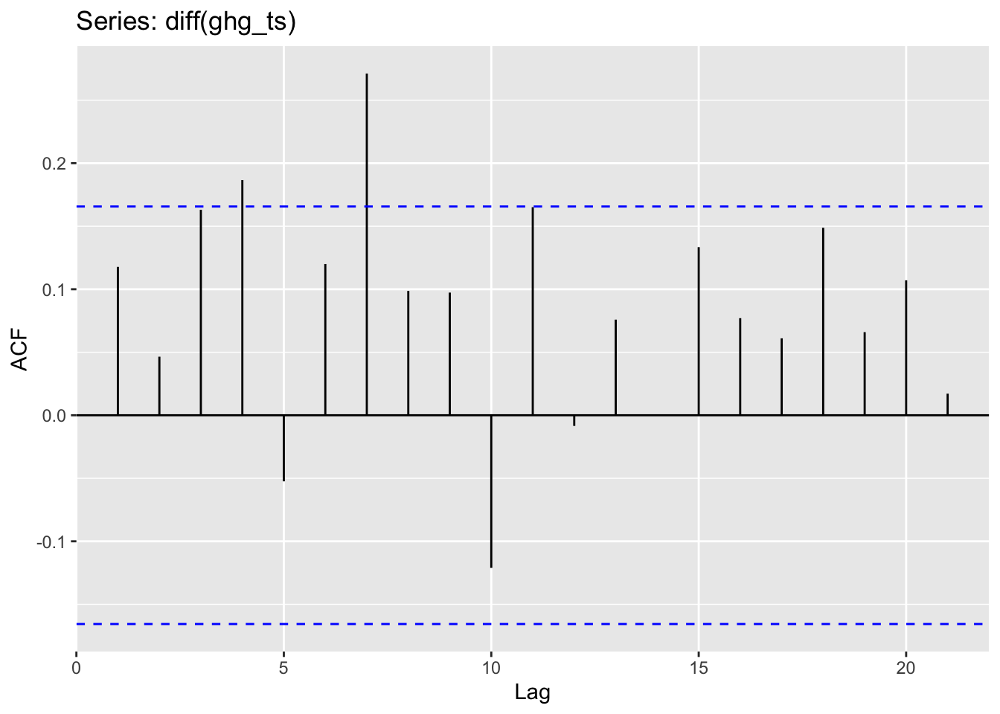
4th lag has significant spike before ACF values drop within the confidence interval, indicating the number of terms in the MA model, which is MA(4).
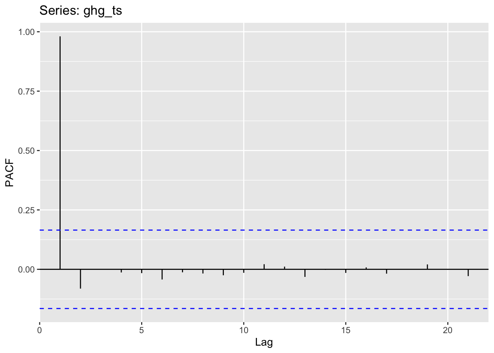
1 significant spike at lag 1 and PACF values fall sharply within the confidence interval after. This suggests an AR(1) model.
Best model
We considered auto arima as it is convenient for automatic model selection as it automatically searches through a range of possible ARIMA model specifications to identify the best-fitting model based on selected criteria. We also did manual Arima modelling as we realise that auto Arima may not capture all relevant aspects of the data.
Series: ghg_ts
ARIMA(0,1,0) with drift
Box Cox transformation: lambda= 0.0819848
Coefficients:
drift
0.1094
s.e. 0.0127
sigma^2 = 0.0228: log likelihood = 66.6
AIC=-129.2 AICc=-129.11 BIC=-123.31
Training set error measures:
ME RMSE MAE MPE MAPE MASE
Training set -10078753 541373695 330494607 -0.0168317 1.534341 0.6861922
ACF1
Training set 0.03589983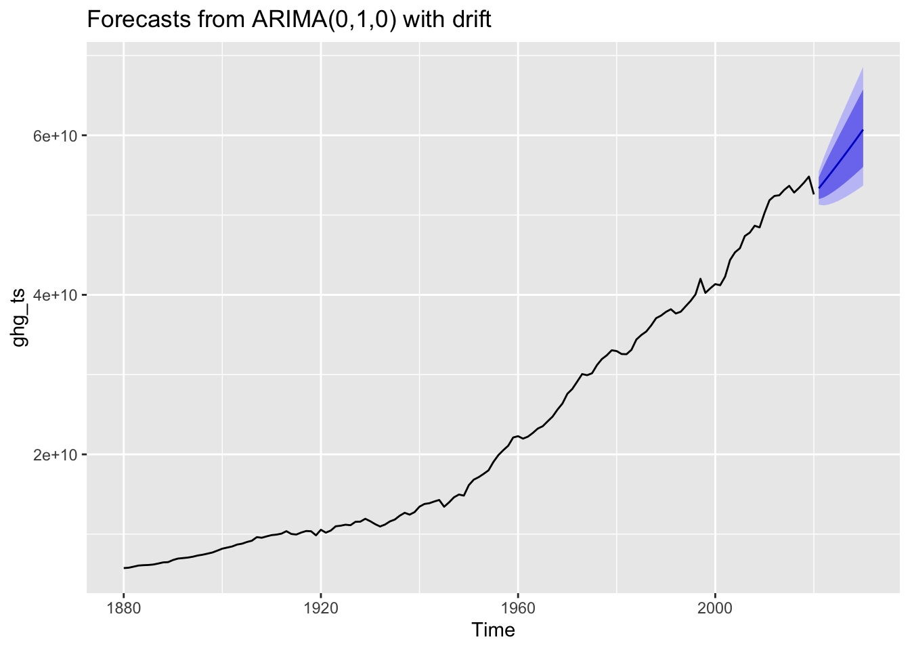
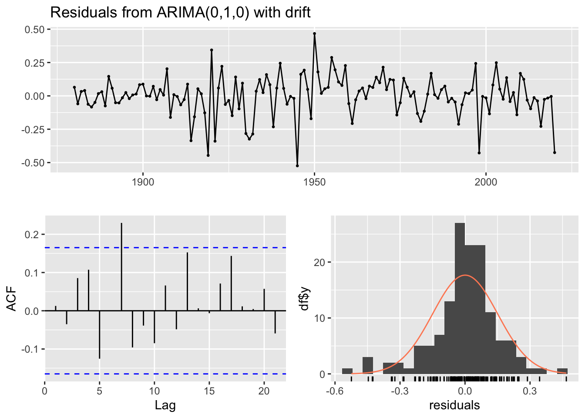
Ljung-Box test
data: Residuals from ARIMA(0,1,0) with drift
Q* = 15.96, df = 10, p-value = 0.1008
Model df: 0. Total lags used: 10 ME RMSE MAE MPE MAPE MASE
Training set 92074.15 233395571 162055510 -0.06343501 1.586946 0.7469053
Test set 247042413.33 553154516 424192168 1.56996909 2.874838 1.9550795
ACF1 Theil's U
Training set -0.1017599 NA
Test set 0.1356965 0.9364229We conclude that the best ARIMA model is (0, 1, 0) as it has the lowest MAPE and AICc than our manual Arima models.
Temperature anomalies
We do the same as above for the other variables.
ACF/PACF
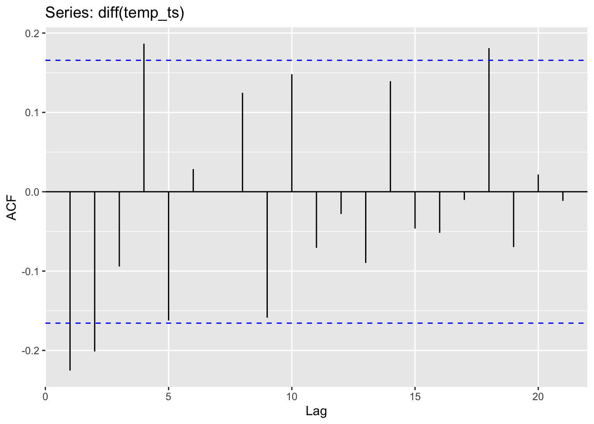
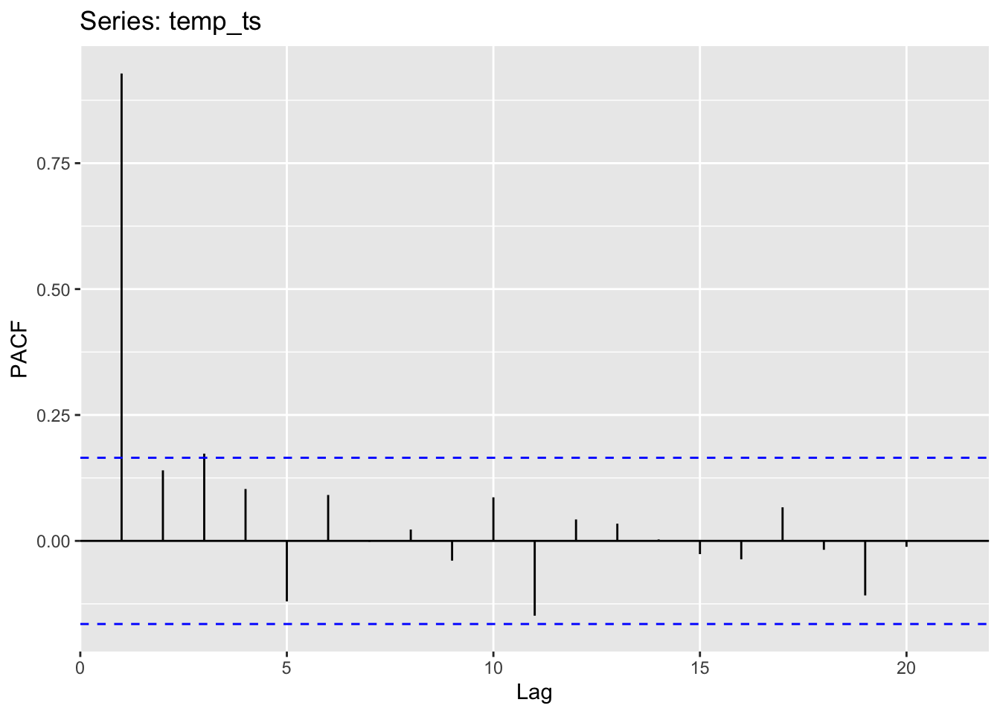
Arima modelling
Warning in guerrero(x, lower, upper): Guerrero's method for selecting a Box-Cox
parameter (lambda) is given for strictly positive data.Series: temp_ts
ARIMA(0,1,2) with drift
Box Cox transformation: lambda= 1.253547
Coefficients:
ma1 ma2 drift
-0.3710 -0.2426 0.0046
s.e. 0.0787 0.0737 0.0020
sigma^2 = 0.003582: log likelihood = 196.89
AIC=-385.78 AICc=-385.48 BIC=-374.01
Training set error measures:
ME RMSE MAE MPE MAPE MASE
Training set -0.001869223 0.09302429 0.07689913 83.65737 126.8209 0.9288366
ACF1
Training set -0.01905851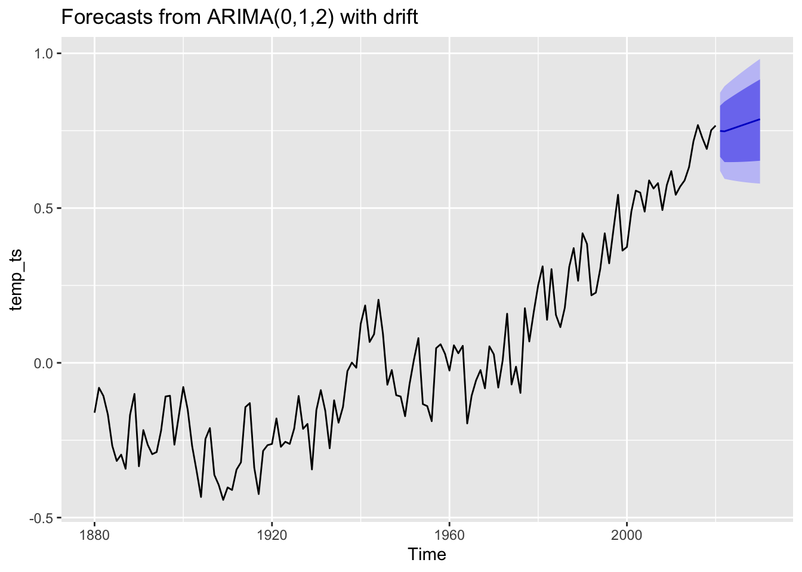
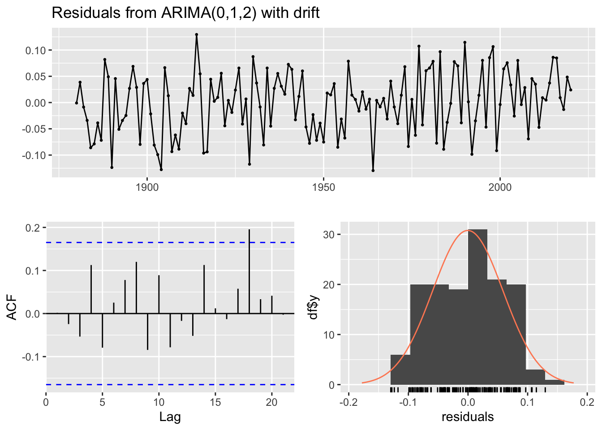
Ljung-Box test
data: Residuals from ARIMA(0,1,2) with drift
Q* = 8.806, df = 8, p-value = 0.3589
Model df: 2. Total lags used: 10 ME RMSE MAE MPE MAPE MASE
Training set 0.006552768 0.08995245 0.07695409 143.31483 215.40489 0.9565581
Test set 0.011865395 0.11716223 0.10616997 96.09611 96.09611 1.3197186
ACF1 Theil's U
Training set 0.005167274 NA
Test set 0.577995268 1.299916We conclude that the best model is ARIMA(0, 1, 2) as it has the lowest RMSE/MAPE than our manual Arima models.
Mean sea level
Series: msl_ts
ARIMA(1,2,2)
Box Cox transformation: lambda= 1.316535
Coefficients:
ar1 ma1 ma2
0.3567 -1.6722 0.6989
s.e. 0.1957 0.1550 0.1519
sigma^2 = 498.5: log likelihood = -629.18
AIC=1266.37 AICc=1266.67 BIC=1278.11
Training set error measures:
ME RMSE MAE MPE MAPE MASE
Training set 0.5148822 5.309408 4.030768 -0.7652999 6.692395 0.8568315
ACF1
Training set -0.03735404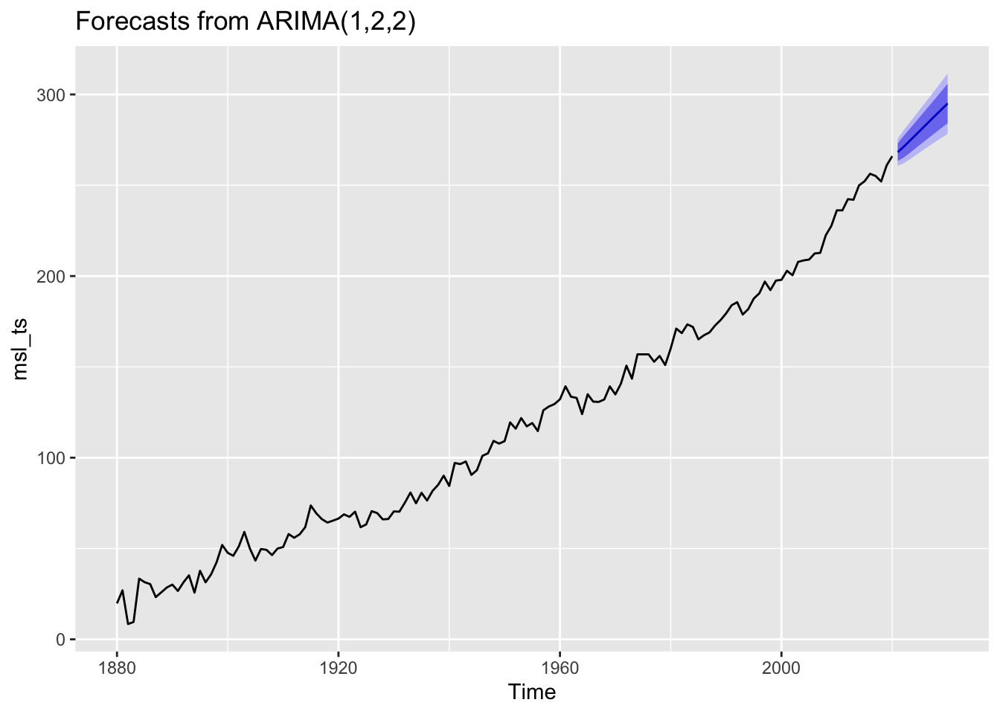

Ljung-Box test
data: Residuals from ARIMA(0,1,2) with drift
Q* = 8.806, df = 8, p-value = 0.3589
Model df: 2. Total lags used: 10 ME RMSE MAE MPE MAPE MASE
Training set -0.05074935 5.656688 4.242850 -4.298562 13.01068 0.8643036
Test set 8.06832080 9.097511 8.104087 7.826382 7.86589 1.6508693
ACF1 Theil's U
Training set 0.1679530 NA
Test set 0.4945515 1.923896We conclude that the best model is ARIMA(0, 1, 2).
Multivariate time analysis
ARIMA-X
We also conducted ARIMA-X modelling as we wanted to leverage on the information provided by both the time series data as well as additional exogenous variables to improve forecasting accuracy and to understand the relationship between our target variable and each of the predictors.
Between 2 variables
Temperature anomalies vs Greenhouse gas emissions
Best model
Warning in guerrero(x, lower, upper): Guerrero's method for selecting a Box-Cox
parameter (lambda) is given for strictly positive data.Series: data[, "temp.anomalies"]
Regression with ARIMA(1,2,2) errors
Box Cox transformation: lambda= 1.131028
Coefficients:Warning in sqrt(diag(x$var.coef)): NaNs produced ar1 ma1 ma2 xreg
0.4628 -1.8547 0.8691 0
s.e. 0.0766 0.0083 0.0026 NaN
sigma^2 = 0.006754: log likelihood = 149.63
AIC=-289.26 AICc=-288.81 BIC=-274.58
Training set error measures:
ME RMSE MAE MPE MAPE MASE
Training set 0.01289628 0.1011968 0.08427159 76.74575 128.5643 0.9195055
ACF1
Training set 0.03088324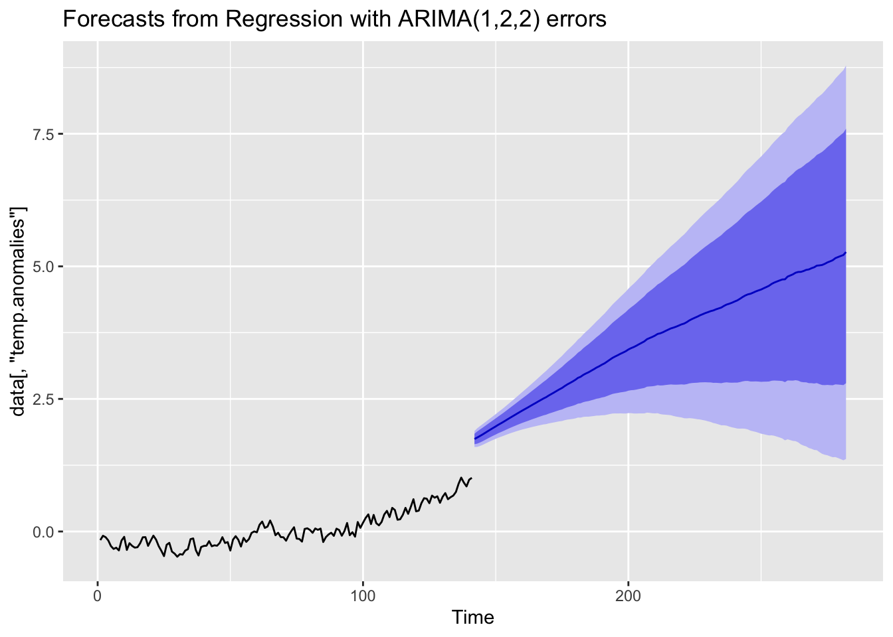
We generated a few models and decided on ARIMA(1, 2, 2) as our best model, with the lowest AICc value and an improved forecast plot.
Mean sea level vs temperature anomalies
Warning in guerrero(x, lower, upper): Guerrero's method for selecting a Box-Cox
parameter (lambda) is given for strictly positive data.Series: data[, "mean.sea.level"]
Regression with ARIMA(0,1,1) errors
Box Cox transformation: lambda= 0.7605642
Coefficients:
ma1 drift xreg
-0.3113 0.6992 1.6075
s.e. 0.0798 0.1177 1.6278
sigma^2 = 4.098: log likelihood = -295.92
AIC=599.83 AICc=600.13 BIC=611.6
Training set error measures:
ME RMSE MAE MPE MAPE MASE
Training set -0.3419077 5.478202 4.227579 -2.295289 13.57332 0.8986682
ACF1
Training set -0.008332118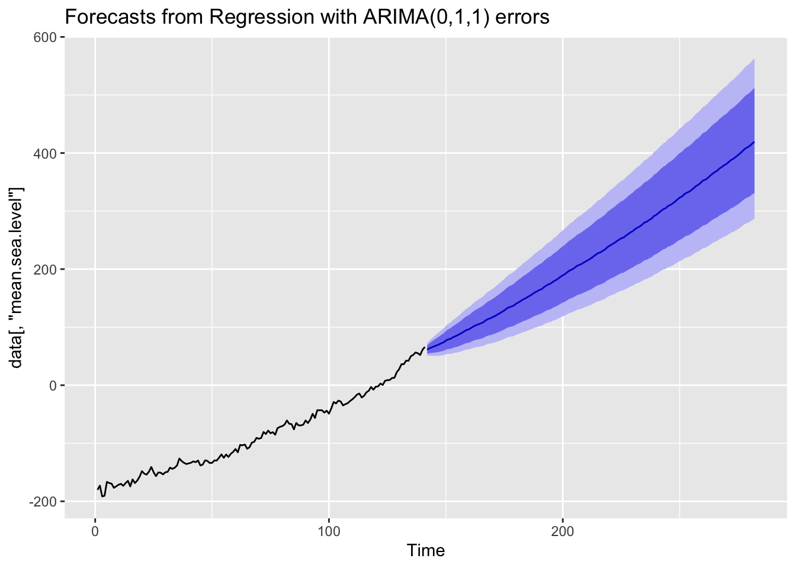
Mean sea level vs greenhouse gas emissions
Warning in guerrero(x, lower, upper): Guerrero's method for selecting a Box-Cox
parameter (lambda) is given for strictly positive data.Series: data[, "mean.sea.level"]
Regression with ARIMA(1,2,2) errors
Box Cox transformation: lambda= 0.7605642
Coefficients:Warning in sqrt(diag(x$var.coef)): NaNs produced ar1 ma1 ma2 xreg
0.3391 -1.6974 0.7256 0
s.e. 0.1241 0.0430 0.0448 NaN
sigma^2 = 3.897: log likelihood = -291.58
AIC=593.17 AICc=593.62 BIC=607.84
Training set error measures:
ME RMSE MAE MPE MAPE MASE
Training set 0.3156484 5.314409 4.009108 -3.744495 12.89853 0.8522272
ACF1
Training set 0.002902288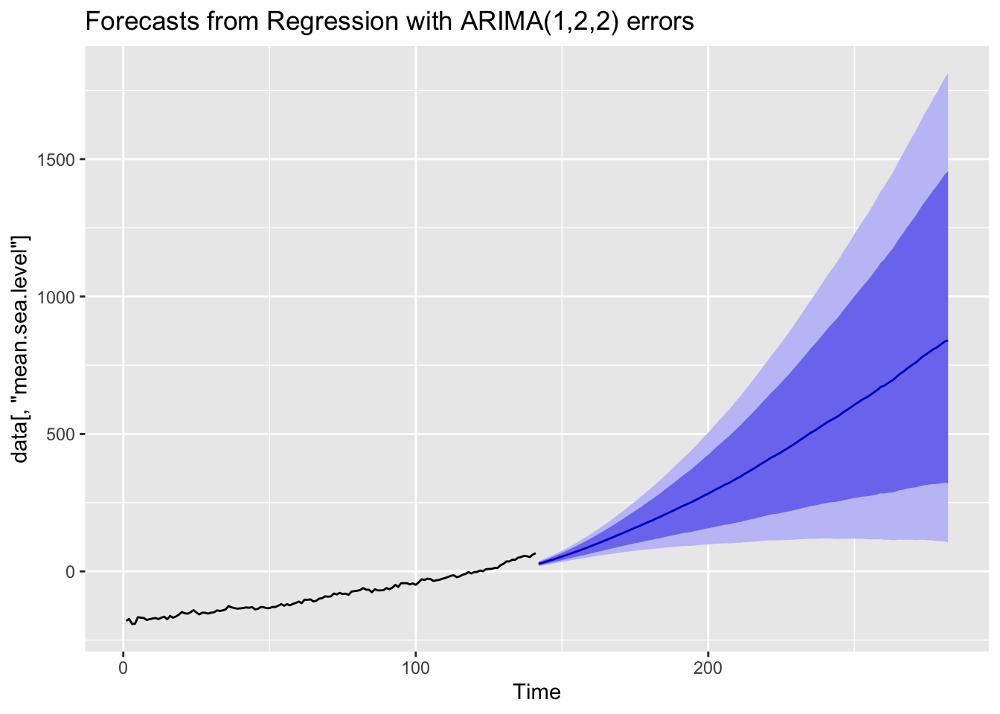
We ended up with ARIMA(1,2,2) being the best model, with the lowest AICc value.
Among the 3 variables
Mean sea level as Y variable
Series: data["mean.sea.level"]
Regression with ARIMA(0,1,2) errors
Coefficients:
ma1 ma2 drift ghg.emission temp.anomalies
-0.4201 -0.1637 1.3287 0 5.0938
s.e. 0.0836 0.0838 0.1010 0 4.3947
sigma^2 = 28.68: log likelihood = -431.2
AIC=874.4 AICc=875.04 BIC=892.05
Training set error measures:
ME RMSE MAE MPE MAPE MASE
Training set -0.02364897 5.239836 4.072119 -5.896119 15.85623 0.8656217
ACF1
Training set 0.005115978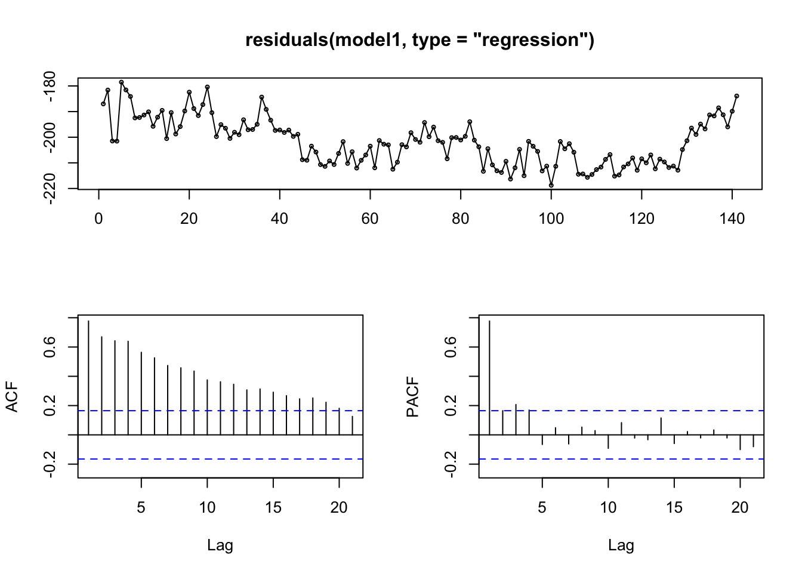
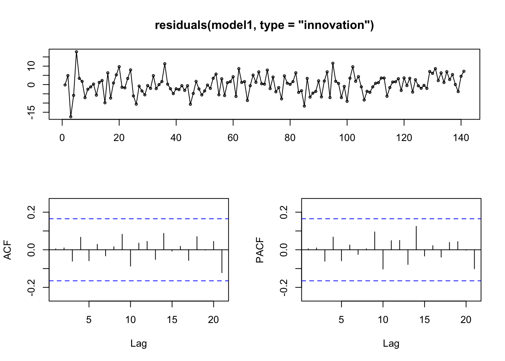
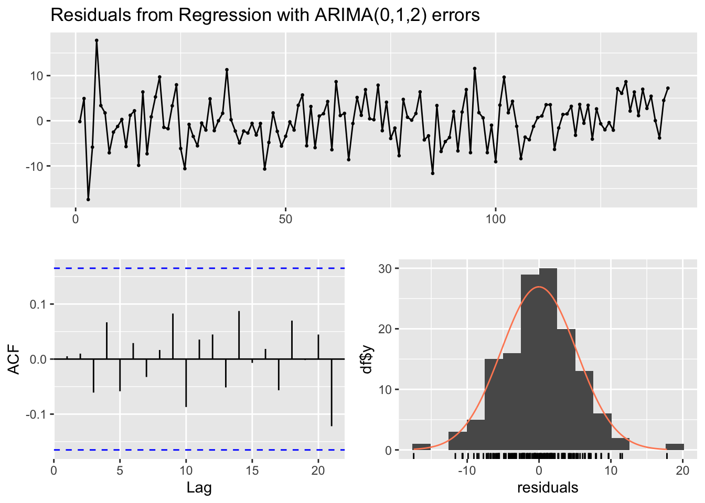
Ljung-Box test
data: Residuals from Regression with ARIMA(0,1,2) errors
Q* = 4.2628, df = 8, p-value = 0.8327
Model df: 2. Total lags used: 10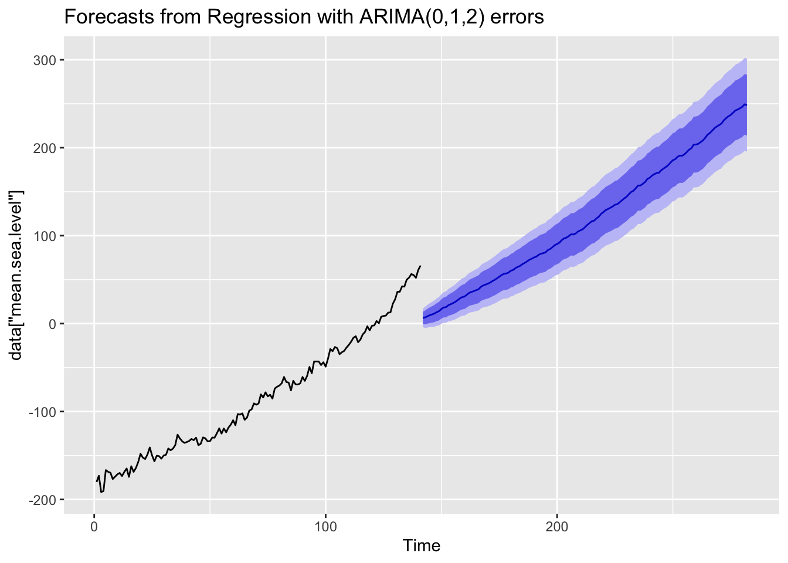
Temperature anomalies as Y variable
Series: data["temp.anomalies"]
Regression with ARIMA(2,0,3) errors
Coefficients:
ar1 ar2 ma1 ma2 ma3 intercept ghg.emission
0.0058 0.8720 0.6365 -0.5240 -0.3082 -0.0994 0
s.e. 0.0732 0.0672 0.1047 0.0992 0.0839 0.2462 0
mean.sea.level
0.0017
s.e. 0.0014
sigma^2 = 0.01005: log likelihood = 127.77
AIC=-237.55 AICc=-236.17 BIC=-211.01
Training set error measures:
ME RMSE MAE MPE MAPE MASE
Training set -0.003360672 0.09738181 0.0804904 47.35752 95.14296 0.8782482
ACF1
Training set -0.01695221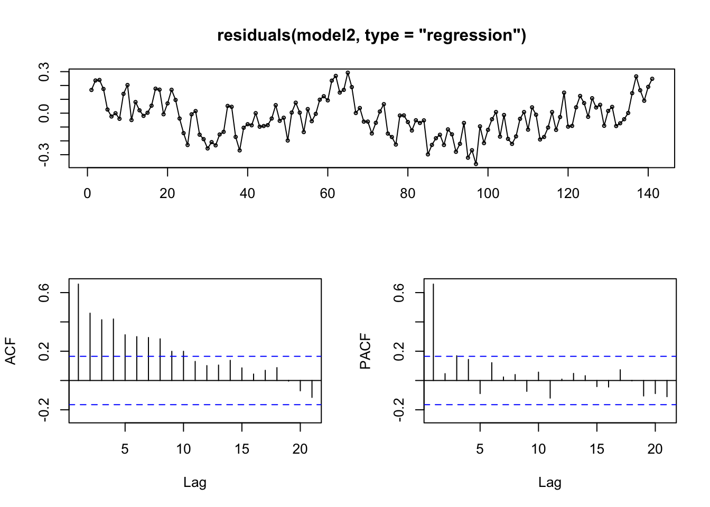
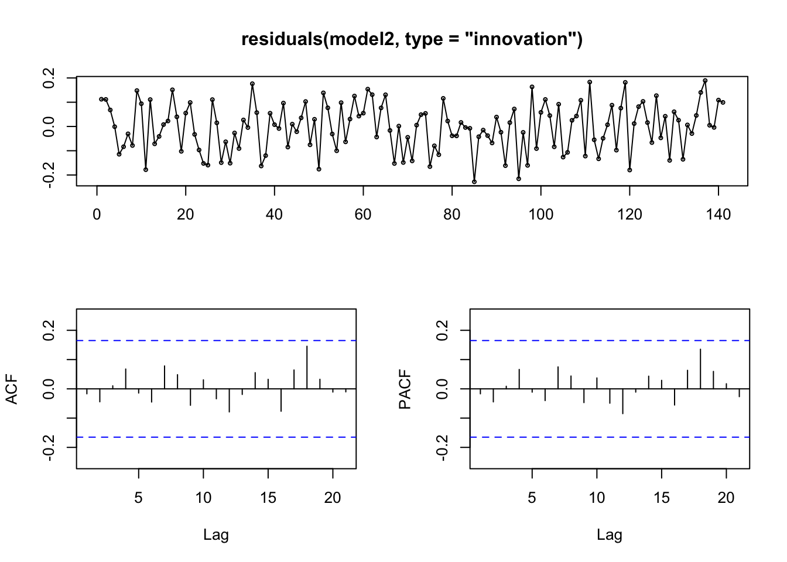
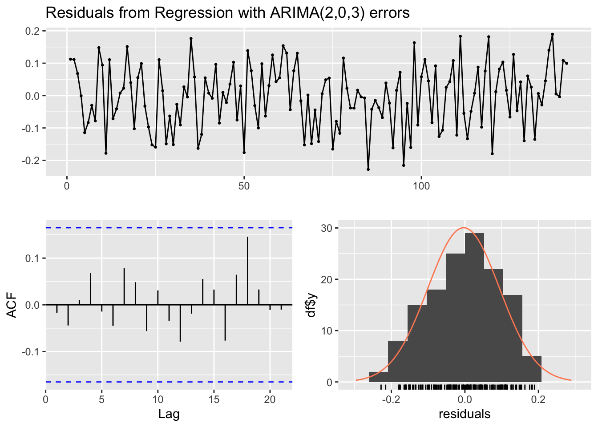
Ljung-Box test
data: Residuals from Regression with ARIMA(2,0,3) errors
Q* = 3.2539, df = 5, p-value = 0.6609
Model df: 5. Total lags used: 10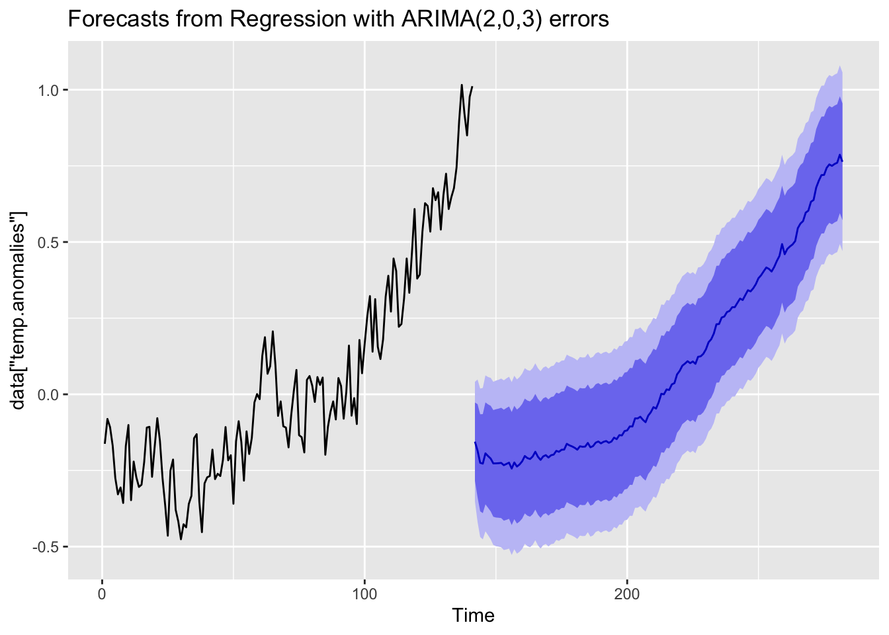
Vector Autoregression (VAR)
We used VAR analysis to conduct a simultaneous time series forecast of 2 interdependent variables.
Due to model complexity, we choose to study only the variables temperature anomalies and mean sea level.
Temperature anomalies and mean sea level
Loading required package: MASS
Attaching package: 'MASS'The following object is masked from 'package:dplyr':
selectThe following objects are masked from 'package:fma':
cement, housing, petrolLoading required package: strucchangeLoading required package: zoo
Attaching package: 'zoo'The following objects are masked from 'package:base':
as.Date, as.Date.numericLoading required package: sandwichLoading required package: lmtest$selection
AIC(n) HQ(n) SC(n) FPE(n)
4 2 1 4
$criteria
1 2 3 4 5 6
AIC(n) -1.2194397 -1.3016037 -1.3123297 -1.3293649 -1.2882188 -1.2705232
HQ(n) -1.1659288 -1.2124189 -1.1874709 -1.1688322 -1.0920122 -1.0386427
SC(n) -1.0877513 -1.0821230 -1.0050567 -0.9342996 -0.8053613 -0.6998734
FPE(n) 0.2954004 0.2721153 0.2692471 0.2647601 0.2759802 0.2810529
7 8 9 10
AIC(n) -1.2262336 -1.1822807 -1.1627808 -1.1335708
HQ(n) -0.9586791 -0.8790523 -0.8238785 -0.7589945
SC(n) -0.5677914 -0.4360463 -0.3287541 -0.2117518
FPE(n) 0.2939881 0.3074825 0.3139063 0.3236826Since SC shows 1, we start with VAR(1) and iterate until there is no longer any residual serial correlation.
Our chosen VAR model
Portmanteau Test (asymptotic)
data: Residuals of VAR object varmodel5
Chi-squared = 17.505, df = 20, p-value = 0.62It has the highest p-value and residuals do not contain serial correlation
Our plot
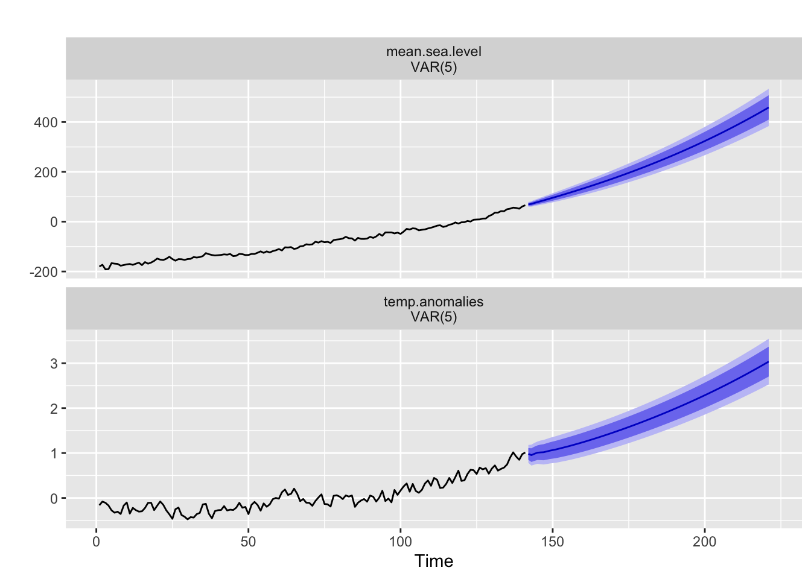
Vector Error Correction Model
Special case of VAR, includes all the terms that are in the VAR and more.
Determining number of cointegrating relationships
summary(ca.jo(tempmsl))
######################
# Johansen-Procedure #
######################
Test type: maximal eigenvalue statistic (lambda max) , with linear trend
Eigenvalues (lambda):
[1] 0.1222926 0.0258292
Values of teststatistic and critical values of test:
test 10pct 5pct 1pct
r <= 1 | 3.64 6.50 8.18 11.65
r = 0 | 18.13 12.91 14.90 19.19
Eigenvectors, normalised to first column:
(These are the cointegration relations)
mean.sea.level.l2 temp.anomalies.l2
mean.sea.level.l2 1.0000 1.0000
temp.anomalies.l2 -199.2354 142.5095
Weights W:
(This is the loading matrix)
mean.sea.level.l2 temp.anomalies.l2
mean.sea.level.d -0.02337127 0.0074556040
temp.anomalies.d 0.00130072 0.00005774943.64 is smaller than all of the critical values, thus we conclude that there is 1 cointegrating relationship.
Determine number of lags
VARselect(tempmsl)$selection
AIC(n) HQ(n) SC(n) FPE(n)
4 2 1 4
$criteria
1 2 3 4 5 6
AIC(n) -1.2194397 -1.3016037 -1.3123297 -1.3293649 -1.2882188 -1.2705232
HQ(n) -1.1659288 -1.2124189 -1.1874709 -1.1688322 -1.0920122 -1.0386427
SC(n) -1.0877513 -1.0821230 -1.0050567 -0.9342996 -0.8053613 -0.6998734
FPE(n) 0.2954004 0.2721153 0.2692471 0.2647601 0.2759802 0.2810529
7 8 9 10
AIC(n) -1.2262336 -1.1822807 -1.1627808 -1.1335708
HQ(n) -0.9586791 -0.8790523 -0.8238785 -0.7589945
SC(n) -0.5677914 -0.4360463 -0.3287541 -0.2117518
FPE(n) 0.2939881 0.3074825 0.3139063 0.3236826Building VECM model
Build a VECM model with lag 1 and 1 cointegrating relationship
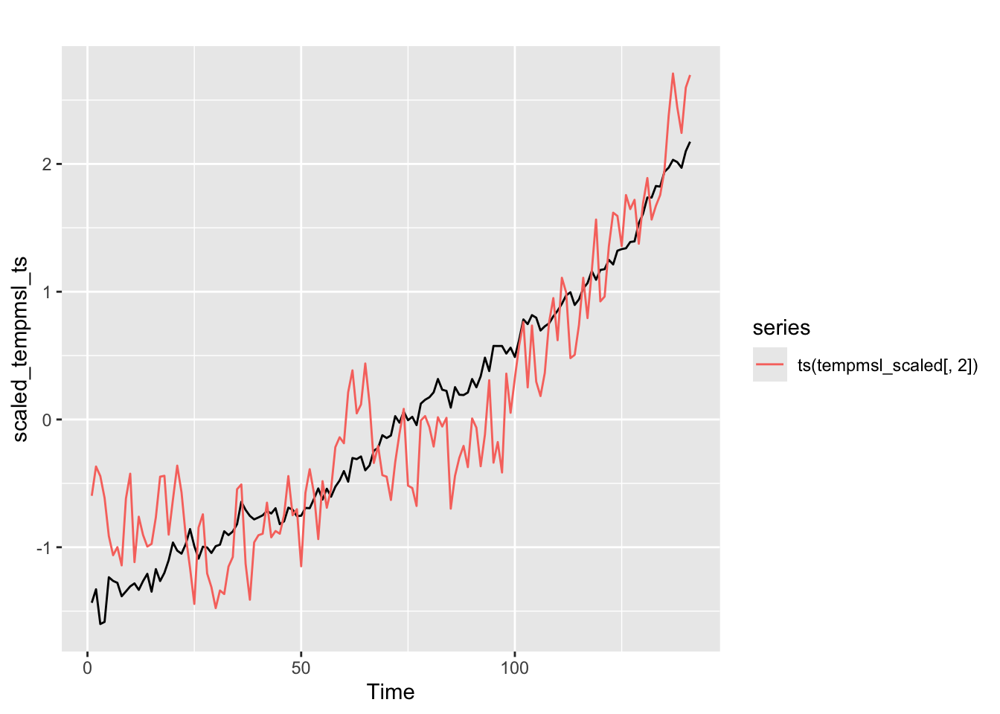
ECT Intercept mean.sea.level -1
Equation mean.sea.level -0.02337127 0.05809115 -0.284712293
Equation temp.anomalies 0.00130072 0.12966909 -0.001091056
temp.anomalies -1
Equation mean.sea.level 1.57031527
Equation temp.anomalies -0.08026665Ljung-Box test
residuals <- resid(vecmmodel)
Box.test(residuals[,1], lag = 1, type = "Ljung") # mean sea level
Box-Ljung test
data: residuals[, 1]
X-squared = 0.16196, df = 1, p-value = 0.6874Box.test(residuals[,2], lag = 1, type = "Ljung") # temp anomalies
Box-Ljung test
data: residuals[, 2]
X-squared = 0.084895, df = 1, p-value = 0.7708Since p-values are more than 0.05, we fail to reject null hypothesis. This indicates that there is insufficient evidence to conclude that there is autocorrelation.
Predict future values
predict(vecmmodel, n.ahead=80) mean.sea.level temp.anomalies
142 67.85203 0.9567247
143 70.16557 0.9291047
144 72.20801 0.9089553
145 74.19780 0.8963804
146 76.10942 0.8891019
147 77.97305 0.8858563
148 79.79801 0.8856045
149 81.59485 0.8875936
150 83.37048 0.8912552
151 85.13033 0.8961664
152 86.87838 0.9020109
153 88.61761 0.9085524
154 90.35026 0.9156147
155 92.07799 0.9230658
156 93.80204 0.9308074
157 95.52335 0.9387660
158 97.24262 0.9468867
159 98.96035 0.9551284
160 100.67694 0.9634605
161 102.39268 0.9718601
162 104.10778 0.9803102
163 105.82240 0.9887979
164 107.53666 0.9973138
165 109.25066 1.0058508
166 110.96447 1.0144034
167 112.67812 1.0229677
168 114.39166 1.0315408
169 116.10512 1.0401205
170 117.81852 1.0487050
171 119.53187 1.0572932
172 121.24519 1.0658841
173 122.95848 1.0744770
174 124.67175 1.0830715
175 126.38501 1.0916671
176 128.09826 1.1002635
177 129.81150 1.1088606
178 131.52473 1.1174582
179 133.23796 1.1260561
180 134.95119 1.1346542
181 136.66441 1.1432526
182 138.37763 1.1518511
183 140.09085 1.1604498
184 141.80407 1.1690485
185 143.51729 1.1776472
186 145.23051 1.1862460
187 146.94372 1.1948449
188 148.65694 1.2034438
189 150.37016 1.2120427
190 152.08337 1.2206416
191 153.79659 1.2292405
192 155.50981 1.2378394
193 157.22302 1.2464384
194 158.93624 1.2550373
195 160.64945 1.2636362
196 162.36267 1.2722352
197 164.07589 1.2808341
198 165.78910 1.2894331
199 167.50232 1.2980320
200 169.21553 1.3066310
201 170.92875 1.3152299
202 172.64197 1.3238289
203 174.35518 1.3324278
204 176.06840 1.3410268
205 177.78161 1.3496257
206 179.49483 1.3582247
207 181.20805 1.3668236
208 182.92126 1.3754226
209 184.63448 1.3840215
210 186.34769 1.3926205
211 188.06091 1.4012194
212 189.77412 1.4098184
213 191.48734 1.4184173
214 193.20056 1.4270163
215 194.91377 1.4356152
216 196.62699 1.4442142
217 198.34020 1.4528131
218 200.05342 1.4614121
219 201.76664 1.4700110
220 203.47985 1.4786100
221 205.19307 1.4872089Conclusion
We conclude that our ARIMA-X is the best model as it has the lowest AICc value.
Based on our forecasts and predictions, we observe that all three of our variables will have a continued increase. This aligns with the understanding that human activities are driving global warming and consequent changes in climate patterns.